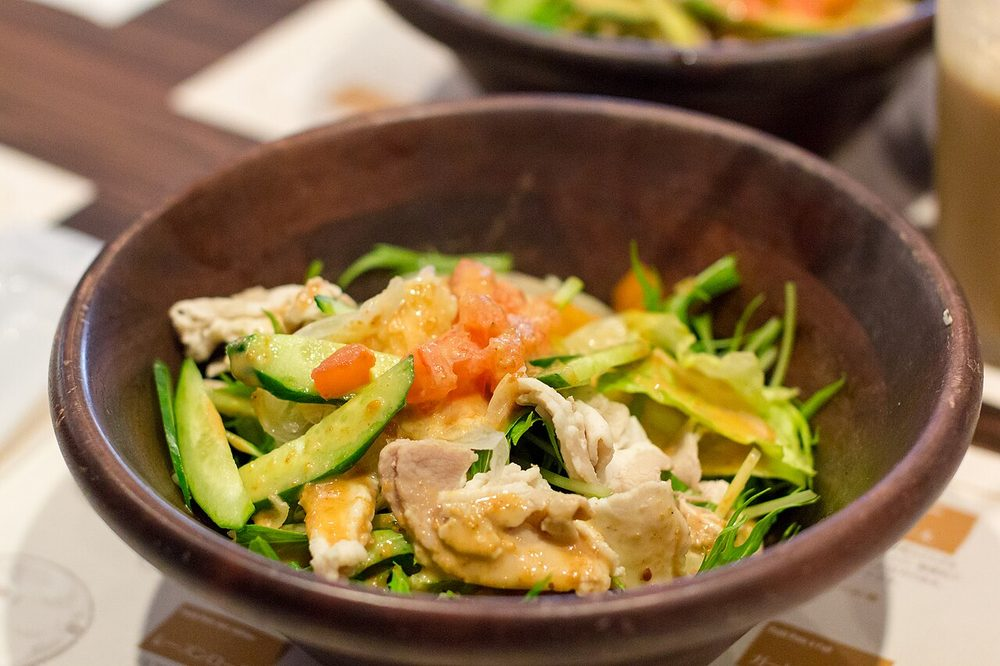

Sanpiau
Mizo rice porridge under a drift of toasted rice powder, coriander and black pepper

Allergens: none of the ten listed below
Ingredients
Quantities for 4.
- 200g, short-grain, rinsed Rice
- 4 tbsp Rice Flourtoasted to a sandy brown. This is the topping that defines the dish, not a thickener for the porridge
- 1 large bunch, about 40g, very finely chopped Coriander Leaves
- 3, finely sliced Spring Onion
- 1 1/2 tsp, coarsely ground Black Pepper
- 3 Dried Red Chilli
- 1, cut into wedges Lemon
- 1.4 litres Water
- to taste Salt
Cookware
stovetop
Checked against the ingredient list for ten allergens: milk, egg, fish, crustaceans, tree nuts, peanuts, sesame, mustard, soy and gluten. Brands vary, so read the label on anything new to you.
Before you start
- Chop the coriander just before serving. Chopped early it goes dark and loses the fresh smell the dish depends on.
- Grind the pepper coarsely and fresh. Pre-ground pepper disappears into the porridge.
- Sanpiau is eaten hot from a bowl as a street snack, so have the toppings ready before the porridge is done.
Method
- Bring the rice and water to a boil, then turn the heat right down.
- Simmer 25 minutes, stirring every few minutes and scraping the base, until the grains have burst and the whole thing is a loose porridge the consistency of thin oatmeal.It should pour, not mound. Add hot water whenever it starts to hold its shape.
- Season with salt and keep it hot on the lowest heat.
- Meanwhile dry-roast the rice flour in a small pan over low heat for 6-8 minutes, stirring without stopping, until it is sandy brown and smells like popcorn.It goes from tan to burnt in under a minute at the end. Do not walk away, and do not raise the heat.
- Tip the toasted flour onto a cold plate and spread it out to cool. It only stays loose and powdery once cold.
- Dry-roast the chillies in the same pan for 40 seconds until brittle, then crush them coarsely.
- Ladle the porridge into bowls, loosening it with hot water if it has thickened while standing.
- Top each bowl with a heaped teaspoon of the toasted rice powder, then a thick layer of coriander, the spring onion, the pepper and a pinch of crushed chilli.Do not stir it in at the pan. The layered toppings hitting the hot porridge in the bowl is the whole experience.
- Serve with a lemon wedge to squeeze over at the table.
Storage
The porridge keeps 2 days refrigerated and sets firm; reheat with plenty of water until it flows again. Store the toasted rice powder separately in a jar for up to a month, and always cut the coriander fresh.
Nutrition Medium estimate
Low protein: 5 g a serving, 8% of the calories
| Per serving393 g | Per 100 g | |
|---|---|---|
| Calories | 246 kcal | 63 kcal |
| Protein | 4.8 g | 1 g |
| Carbohydrate | 54.2 g | 14 g |
| of which sugars | 0.4 g | 0 g |
| Fibre | 1.4 g | 0 g |
| Fat | 0.6 g | 0 g |
| of which saturated | 0.2 g | 0 g |
| of which unsaturated | 0.4 g | 0 g |
Ingredients given to taste count as zero, so the real figures run a little higher. Estimated from raw ingredients using USDA FoodData Central.
More like this: Vegan Indian recipes · Vegetarian Indian recipes · Gluten-free Indian recipes · Dairy-free Indian recipes · Northeast Indian recipes
Times, yields, allergens and nutrition are guidance. Use your own judgement on doneness and on storing. More in About.